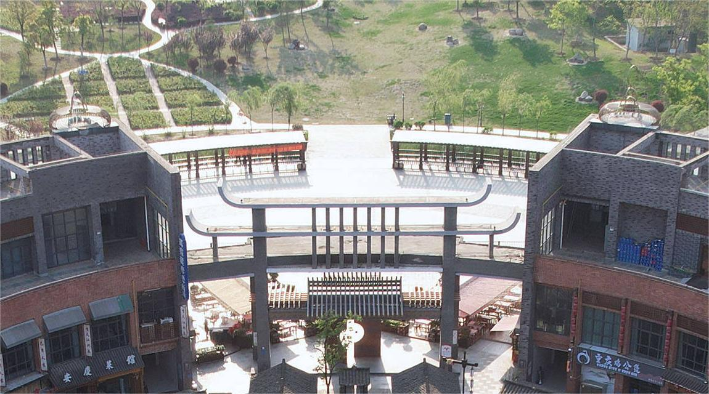
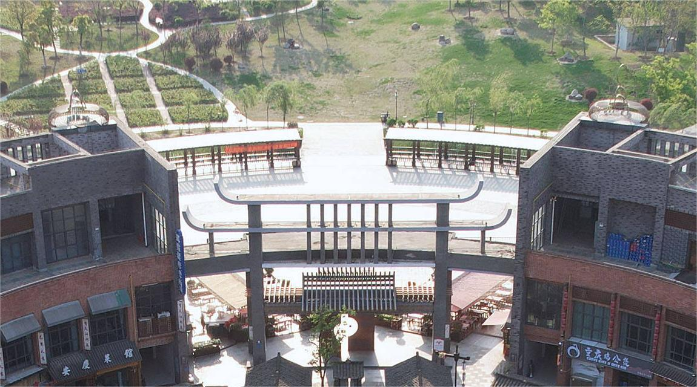

黉街：合肥的文化新地标
黉街，位于合肥新站区磨店职教城梦溪路与学府路交口，已成为合肥的文化新地标，集历史、文化、商业、休闲于一体，为游客和市民提供了一个独特且丰富的体验空间。
一、历史沿革
黉街的名称源自古代的“黉学”，即古代的学府，这一命名寓意着街区深厚的文化底蕴和教育氛围。 街区以民国时期为基调，再现了磨店清末民初的盛世，同时融合了现代设计元素，让游客在感受历史的同时，也能领略到现代都市的活力。
二、建筑风格
黉街的建筑风格独特，以民国时期的建筑为蓝本，结合现代设计元素，打造出了一个既复古又时尚的街区。 街区内布局合理，将商业、文化、休闲等多种功能融为一体。 从庐州书院到合肥科教人文主题公园，每一处都散发着浓郁的文化气息。
三、文化特色
庐州书院：作为黉街的重要景点之一，庐州书院展现了合肥悠久的历史和文化。 游客可以在这里感受古代学府的韵味，了解合肥的文化底蕴。 合肥科教人文主题公园：这是一个集科普、教育、休闲于一体的主题公园，为游客提供了一个了解合肥科教发展的窗口。 公园内设有多个展区，展示了合肥在科技、教育等领域的成就。 罍+村：作为黉街的文化品牌项目，“罍+村”为游客提供了丰富的生活场景和美食享受。 这里汇聚了众多传统小吃和手工艺品，让游客在品尝美食的同时，也能感受到传统文化的魅力。
四、旅游体验
黉街为游客提供了丰富的旅游体验和活动。游客可以在这里漫步古街，欣赏古色古香的建筑和美丽的风景； 也可以去文化场馆、艺术馆等地参观展览，了解当地的历史文化； 此外，黉街还定期举办各种文化活动、艺术展览等，为游客提供了丰富的文化盛宴。 在夜晚，黉街更是别有一番风味，沿街的灯光璀璨夺目，为游客营造了一个浪漫而温馨的氛围。
总结
黉街作为合肥的文化新地标，以其独特的建筑风格、丰富的文化底蕴和多元的旅游体验吸引了众多游客前来观光游览。 这里不仅是了解合肥历史文化的重要窗口，也是感受传统文化与现代都市魅力的绝佳之地。 无论是文化爱好者还是休闲游客都能在黉街找到属于自己的乐趣和收获。
电话：
邮箱：
手机：
地址：